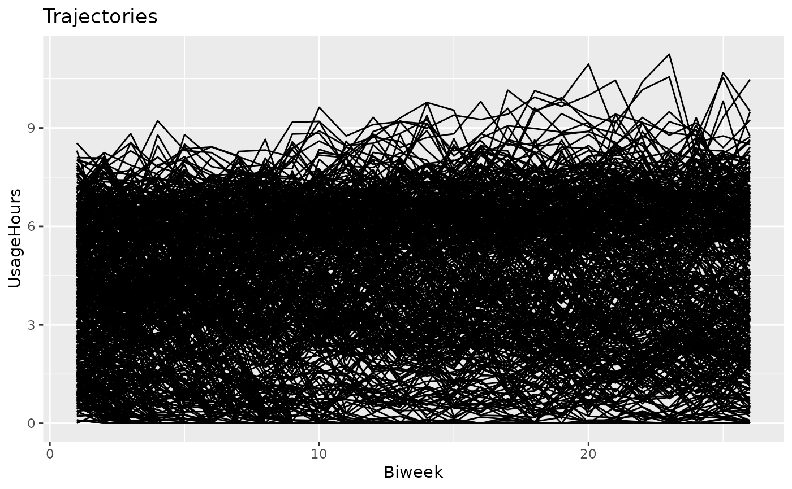

A simulated longitudinal dataset comprising 500 patients with obstructive sleep apnea (OSA) during their first year on CPAP therapy. The dataset contains the patient usage hours, averaged over 2-week periods.
The daily usage data underlying the downsampled dataset was simulated based on 7 different adherence patterns. The defined adherence patterns were inspired by the adherence patterns identified by Aloia et al. (2008), with slight adjustments
OSA.adherence
Format
A data.frame comprising longitudinal data of 500 patients, each having 26 observations over a period of 1 year.
Each row represents a patient observation interval (two weeks), with columns:
- Patient
factor: The patient identifier, where each level represents a simulated patient.- Biweek
integer: Two-week interval index. Starts from 1.- MaxDay
integer: The last day used for the aggregation of the respective interval,integer- UsageHours
numeric: The mean hours of usage in the respective week. Greater than or equal to zero, and typically around 4-6 hours.- Group
factor: The reference group (i.e., adherence pattern) from which this patient was generated.
Source
This dataset was generated based on the cluster-specific descriptive statistics table provided in Aloia et al. (2008), with some adjustments made in order to improve cluster separation for demonstration purposes.
Mark S. Aloia, Matthew S. Goodwin, Wayne F. Velicer, J. Todd Arnedt, Molly Zimmerman, Jaime Skrekas, Sarah Harris, Richard P. Millman, Time Series Analysis of Treatment Adherence Patterns in Individuals with Obstructive Sleep Apnea, Annals of Behavioral Medicine, Volume 36, Issue 1, August 2008, Pages 44-53, https://doi.org/10.1007/s12160-008-9052-9
Note
This dataset is only intended for demonstration purposes. While the data format will remain the same, the data content is subject to change in future versions.
Examples
library(latrend) data(OSA.adherence) plotTrajectories(OSA.adherence, id = "Patient", time = "Biweek", response = "UsageHours")  # plot according to cluster ground truth plotTrajectories(OSA.adherence, id = "Patient", time = "Biweek", response = "UsageHours", cluster = "Group")